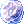

Player Commands
Game Commands
This is a list of commands players can use in-game for their convenience.
Meta Information
| Command | Variable | Description |
|---|---|---|
| @cooldown | None | Displays the user's Instance cooldown timers |
| @dailies | None | Displays the Daily Rewards window |
| @events | None | Displays the time until scheduled events |
| @help | None | Displays a list of server commands |
| @rates | None | Display the server's EXP/Job/Drop rates |
| @time | None | Displays the current server time |
| @uptime | None | Displays how long the server has been active for |
Database Commands
| Command | Variable | Description |
|---|---|---|
| @iteminfo
@ii |
<Name/ID> | Displays information about an item (Name, ID and sell price) |
| @mobinfo
@mi |
<Name/ID> | Displays a mob's stats and item drop rates |
| @whereis
@wi |
<Name/ID> | Displays where a mob spawns (regular spawn only) |
| @whobuy
@wb |
<Name/ID> | Displays players Buying Stores containing that item |
| @whosell
@ws |
<Name/ID> | Displays players Vending stores containing that item |
| @ws3 | <Name/ID> | Displays players Vending stores containing that item, sold for  7 Carat Diamond instead of zeny |
| @whonpcsell
@wn |
<Name/ID> | Displays NPC shop locations for an item |
General Commands
| Command | Variable | Description |
|---|---|---|
| @battlestats
@bs |
None | Displays in-depth character stats |
| @botreport | <Name> | Reports a character as a bot for verification (Use this command responsibly, do not make intentionally false reports) |
| @countmonster | <Name/ID> <Ammount> | Creates a count of monsters killed for the specified ID. You can list multiple monsters. |
| /ex | <Player Name> | Prevents the specified player messages (whispers and public chats) to reach you. |
| @go | <Name> | Teleports you to the specified town (Use alone for town list) |
| @hidepet | None | Hides all pets (yours + other players) |
| @leaveclan | None | Leave a clan |
| @me | <Text> | Displays the text as a character action |
| @mineffect | None | Displays simplified skill effects |
| @missionreset | None | Resets a Taekwon Kid mission, allowing you to receive another one |
| @navi | <map> <x,y> | Enables navigation to lead you to set coordinates on the set map |
| @navistop | None | Stops navigation |
| @noks | None | Prevents players from damaging mobs who hit you or were hit by you |
| @notarget
@nomelee |
None | Prevents your cursor from targeting mobs |
| @refresh | None | Reloads displayed positions (Removes Position Lag errors) |
| @return
@load |
None | Teleports you back to your save location |
| @runecd | None | Displays the cooldown on certain rune usage |
| @shopjump | <map> <x,y> | Teleports you to the shop located in those coordinates |
| @showbuff | None | Displays party buffs in the party window (F = Full Chemical Protection, + = Blessing, - = Increase Agility, $ = Sacrament, Cross = Aspersio, D = Devotion, P = Pneuma) |
| @showdelay | None | Displays Cast Delay or Cooldown for skills, requires Skill Failure Display option to be on |
| @showexp | None | Displays gained EXP per kill |
| @showheal | None | Displays sources of healing like Potions and Drain items as an effect on you |
| @showvend | None | Displays cells available for the Merchant "Vending" skill |
| @spam | None | Toggles the Skill Queue system (Buffers skills used while on cooldown for the earliest available moment) |
| @view | Read Description | Toggles between hiding and showing different things:
@view cart : Hide/show your character's cart for everybody
|
| Command | Variable | Description |
|---|---|---|
| @autoloot @al | <Drop rate> | Automatically loots drop rate below the rate selected |
| @alootid | +/-<Name/ID> | + Specifies an item to always autoloot. - Blacklists an item from autolooting |
| @aloottype | +/-<Type> | + Specifies an item type to always autoloot. - Blacklists an item type from autolooting
Types: 0 = Healing, 2 = Usable, 3 = Etc, 4 = Armor, 5 = Weapon, 6 = Card, 7 = Pet Eggs, 8 = Pet Accessories, 10 = Ammo |
| @alootvalue | <zeny> | Allows you to only autoloot items of higher value than the set amount.
@alootvalue 30000 will only autoloot items which NPC base sell price is higher than 30,000z |
| @savealoot | None | Saves your current @alootid list, together with @autoloot, @alootvalue and @aloottype values |
| @loadaloot | None | Loads a previously saved autolooting configuration from @savealoot |
| @countitem | <Name/ID> <Ammount> | Displays drops of an item, counting until it reaches the desired ammount |
| @nodrop | None | Prevents you from dropping high-rarity items |
| @nopickup | None | Prevents you from looting items from the ground |
| @noshare | <Drop rate> | Prevents you from receiving loots from party kills |
| @restock | Read Description | Restock allows you to automatically draw a set of registered items from your storage. This command must be used with the storage open. Restock2 and Restock3 can be used as additional lists
@restock +/-<ItemID> <Amount> <Type>: Adds or Removes the item from your Restock list @restock list: Lists the items currently registered @restock snapshot: Registers the items currently in your inventory (Usable/Misc only) @restock reset: Erases your current restock list |
Party Commands
| Command | Variable | Description |
|---|---|---|
| @invite | <Name> | Invites a character to your party (Party Leader Only) |
| @leaveparty | None | Leaves a party |
| @noask | None | Prevents party invitations |
| @party | <Name> | Creates a party |
| @partyleader | <Name> | Transfers party leadership (Party Leader Only) |
| @partyorder | <Text> | Displays a priority message for the party (Party Leader Only) |
Guild Commands
| Command | Variable | Description |
|---|---|---|
| @guild | <name> | Creates a guild (Requires 1 Emperium) |
| @breakguild | None | Disbands a guild (Guild leader only, all members must be expelled beforehand) |
| @changegm | <name> | Transfers guild ownership |
| @guildinvite | <name> | Invites a character to a guild |
PvP and Siege
| Command | Variable | Description |
|---|---|---|
| @joinbg | None | Joins the Battlegrounds queue |
| @partyjoinbg | None | Joins the Battlegrounds queue as a duo (Same team) |
| @leavebg | None | Leaves the Battlegrounds queue |
| @voteskip | None | Adds a vote to skip a Battlegrounds gamemode |
| @leader | <Name> | Transfer BG leadership |
| @voteleader | None | Adds a vote to change BG leader in Battlegrounds |
| @guildskill | <EC/BO/RG/RS> | Activates a guild skill (Emergency Call, Battle Orders, Regeneration, Restore) |
| @order | <Text> | Displays a priority message for the guild (Guild Leader Only) |
| @battleinfo | None | Displays kill/death info |
| @listenbg | None | Displays BG status messages |
| @listenpvp | None | Displays PvP status messages |
| @duel | <Name> | Invites a character to a duel |
| @accept | None | Accepts a duel invitation |
| @reject | None | Rejects a duel invitation |
| @leave | None | Leaves duel status |
| @hidecostume | None | Hides costume effects (Siege only) |
| @gcd | None | Display cooldown for Guild Skills in Siege |
NovaEXT Commands
These commands apply to the NovaExt feature. To enable them, you must toggle the Sound settings to "Use 2D Sounds" from the NovaRO Patcher. These settings are better adjusted using the NovaEXT Editor through the toolbox icon in the Patcher
| Command | Description |
|---|---|
| /autocool 0-2 | enables CPU cooling which lessens the load of the NovaRO client on your PC (useful for multiclienting). 0 for off, 1 for minimized client only, 2 for inactive clients |
| /bbe | displays bowling bash gutterlines |
| /box | displays a box around the character to show if a monster will detect you or not |
| /circle1-4 | displays your skill range circles, range editable manually in novaext.ini file |
| /dead | displays deadcells (non-walkable cells) in black |
| /fps | displays frame rate at the top right of your screen |
| /helpext | displays list of NovaExt commands in game |
| /m2e | displays ground AoE skills around you |
| /timestamp | adds timestamps to chat |
| /turbo | toggles turbo mode/smart casting for battlemode |
| /vsync | may fix window mode vsync issues (rare, but try, may solve screen tearing) |
| /zbias # | adjust cells whose higher than drawn (this should resolve problems with color cells, increase this number) |